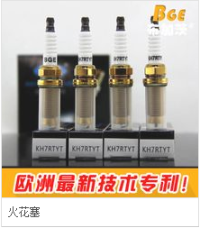
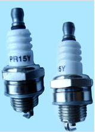
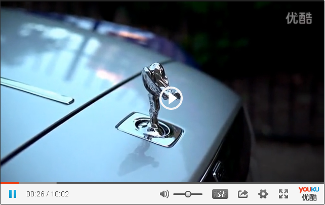

车型>维修问题2002款波罗1.4L车空调不制冷
火花塞是一个
多义词
，请在下列
义项
中选择浏览
<共4个义项>
解决方案
汽车零件
汽车零件
汽车零件
汽车零件
2002款波罗1.4L车空调不制冷
收藏 点赞 转发
火花塞（spark plugs），俗称火嘴，它的作用是把高压导线送来的脉冲高压电放电，击穿火花塞两电极间空气，产生电火花以此引燃
气缸
内的混合气体。主要类型有：准型火花塞、缘体突出型火花塞、电极型火花塞、座型火花塞、极型火花塞、面跳火型火花塞等。火花塞的功用是将上万伏的高压电引入燃烧室，并产生电火花点燃混合气，与点火系统和供油系统配合使发动机作功，在很大程度上共同决定着发动机的性能
01
故障现象
02
故障诊断
03
故障排除
04
故障分析
05
视频
06
图片
故障现象
编辑
此时，点火系统的其它部分则产生正时的高压电脉冲，形成火花并产生爆炸提供引擎动力输出所需的能源。 而火花塞的构造是以一根细长的金属电板穿过一个具有绝缘功能的陶瓷材质而制成，绝缘体的下部周围有一个金属材质的壳，以螺牙方式旋紧在盖上小的放电间隙分隔开来。 接着，从分电器来的高压电流会经过这个中央电极导电，然后在底端的放电间隙放电，这时火花塞发挥功用产生火花燃烧混合气，引擎就得到能源并输出功率。 由此可见，火花塞是将进入发动机燃烧的汽油和空气混合气体加以点燃的装置,工作于高温、高压的恶劣条件下，是汽油发动机的易损件之一，它在发都有很大关

故障诊断
编辑

此时，点火系统的其它部分则产生正时的高压电脉冲，形成火花并产生爆炸提供引擎动力输出所需的能源。 而火花塞的构造是以一根细长的金属电板穿过一个具有绝缘功能的陶瓷材质而制成，绝缘体的下部周围有一个金属材质的壳，以螺牙方式旋紧在盖上小的放电间隙分隔开来。 接着，从分电器来的高压电流会经过这个中央电极导电，然后在底端的放电间隙放电，这时火花塞发挥功用产生火花燃烧混合气，引擎就得到能源并输出功率。 由此可见，火花塞是将进入发动机燃烧的汽油和空气混合气体加以点燃的装置,工作于高温、高压的恶劣条件下，是汽油发动机的易损件之一，它在发都有很大关系。
故障排除
编辑
此时，点火系统的其它部分则产生正时的高压电脉冲，形成火花并产生爆炸提供引擎动力输出所需的能源。 而火花塞的构造是以一根细长的金属电板穿过一个具有绝缘功能的陶瓷材质而制成，绝缘体的下部周围有一个金属材质的壳，以螺牙方式旋紧在盖上小的放电间隙分隔开来。 接着，从分电器来的高压电流会经过这个中央电极导电，然后在底端的放电间隙放电，这时火花塞发挥功用产生火花燃烧混合气，引擎就得到能源并输出功率。 由此可见，火花塞是将进入发动机燃烧的汽油和空气混合气体加以点燃的装置,工作于高温、高压的恶劣条件下，是汽油发动机的易损件之一，它在发都有很大关系。
故障分析
编辑
此时，点火系统的其它部分则产生正时的高压电脉冲，形成火花并产生爆炸提供引擎动力输出所需的能源。 而火花塞的构造是以一根细长的金属电板穿过一个具有绝缘功能的陶瓷材质而制成，绝缘体的下部周围有一个金属材质的壳，以螺牙方式旋紧在盖上小的放电间隙分隔开来。 接着，从分电器来的高压电流会经过这个中央电极导电，然后在底端的放电间隙放电，这时火花塞发挥功用产生火花燃烧混合气，引擎就得到能源并输出功率。 由此可见，火花塞是将进入发动机燃烧的汽油和空气混合气体加以点燃的装置,工作于高温、高压的恶劣条件下，是汽油发动机的易损件之一，它在发都有很大关系。
视频
编辑
题2002款波罗1.4L车空调不制冷

图片
编辑